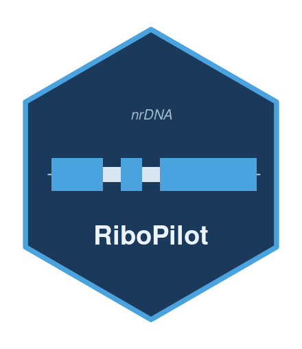

Score GetOrganelle candidate paths from real assembly output
Source:R/select_paths.R
score_assembly.RdScore GetOrganelle candidate paths from real assembly output
Usage
score_assembly(
path_fastas,
gfa_path = NA_character_,
sample_lineage = NA_character_,
blast_db = NULL,
taxdump_dir = NULL,
with_staxids = FALSE,
expected_length = c(4000, 12000),
weights = DEFAULT_SCORE_WEIGHTS
)Arguments
- path_fastas
Character vector of per-path fasta files.
- gfa_path
The assembly graph `.gfa` (for depth). May be NA.
- sample_lineage
The sample's resolved "; " ranked lineage.
- blast_db
BLAST nucleotide db prefix (e.g. the Actinopterygii seeds db, or an nt-style db).
- taxdump_dir
Pinned taxdump dir (for resolving hit lineages).
- with_staxids
TRUE if `blast_db` carries taxids; else taxonomy is taken from the seed-DB subject id species.
- expected_length, weights
Passed to [score_candidates()].